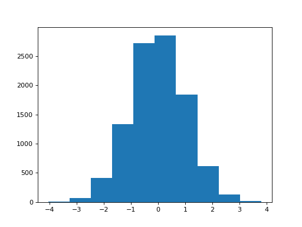

\(\newcommand{L}[1]{\| #1 \|}\newcommand{VL}[1]{\L{ \vec{#1} }}\newcommand{R}[1]{\operatorname{Re}\,(#1)}\newcommand{I}[1]{\operatorname{Im}\, (#1)}\)
A two-group permutation test¶
Test the null hypothesis that two samples of values could have come from the same underlying distribution.
See: Comparing two groups with permutation testing.
>>> import random
>>> def mean(some_list):
... return sum(some_list) / len(some_list)
>>> def two_group_permute(group_1, group_2):
... n_samples = 10000
... n_group_1 = len(group_1)
... combined = list(group_1) + list(group_2)
... observed = mean(group_1) - mean(group_2)
... samples = []
... for i in range(n_samples):
... random.shuffle(combined)
... fake_mean_1 = mean(combined[:n_group_1])
... fake_mean_2 = mean(combined[n_group_1:])
... samples.append(fake_mean_1 - fake_mean_2)
... return observed, samples
In action on the Brexit age data:
>>> import pandas as pd
>>> remain_leave = pd.read_csv('remain_leave.csv')
>>> remainers = remain_leave[remain_leave['brexit'] == 1]
>>> brexiteers = remain_leave[remain_leave['brexit'] == 2]
>>> # We make a list from the Pandas column with the "list" function
>>> brexit_ages = list(brexiteers['age'])
>>> remain_ages = list(remainers['age'])
>>> actual, samples = two_group_permute(brexit_ages, remain_ages)
>>> actual
3.6998380833655773
Hint
If running in the IPython console, consider running %matplotlib to enable
interactive plots. If running in the Jupyter Notebook, use %matplotlib
inline.
>>> import matplotlib.pyplot as plt
>>> plt.hist(samples)
(...)
{kind=link}
{kind=link}
